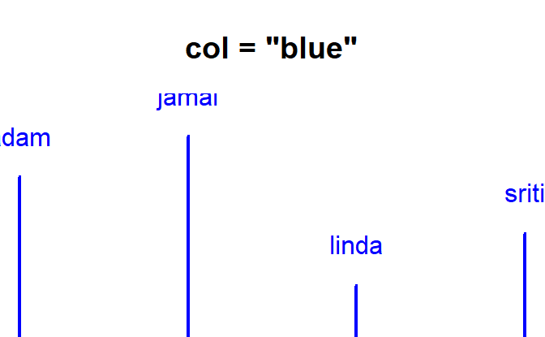
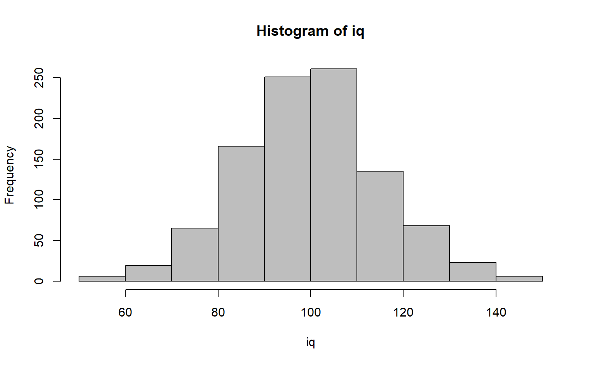

Chapter 3 Data Types
3.1 Key Concepts

Figure 3.1: Components of a Vector

Figure 3.2: Basic data types in R
3.2 Vectors
Generally speaking a vector is a set of numbers, words, or other values stored sequentially:
- [ 1, 2, 3]
- [ apple, orange, pear ]
- [ TRUE, FALSE, FALSE ]
In social sciences, a vector usually represents a variable in a dataset, often as a column in a spreadsheet.
There are four primary vector types (“classes”) in R:
| Class | Description |
|---|---|
| numeric | Typical variable of only numbers |
| character | A vector of letters or words, always enclosed with quotes |
| factor | Categories which represent groups, like treatment and control |
| logical | A vector of TRUE and FALSE to designate which observations fit a criteria |
Each vector or dataset has a “class” that tells R the data type.
These different vectors can be combined into three different types of datasets (data frames, matrices, and lists), which will be discussed below.
x1 <- c(167,185,119,142)
x2 <- c("adam","jamal","linda","sriti")
x3 <- factor( c("male","male","female","female") )
x4 <- c( "treatment","control","treatment","control" )
x5 <- x4 == "treatment"
dat <- data.frame( name=x2, sex=x3, treat=x4, is.treat=x5, strength=x1 )| name | sex | treat | is.treat | strength |
|---|---|---|---|---|
| adam | male | treatment | TRUE | 167 |
| jamal | male | control | FALSE | 185 |
| linda | female | treatment | TRUE | 119 |
| sriti | female | control | FALSE | 142 |
R keeps track of the data type of each object, which can be ascertained using the class() function.
### $name
### [1] "character"
###
### $sex
### [1] "factor"
###
### $treat
### [1] "character"
###
### $is.treat
### [1] "logical"
###
### $strength
### [1] "numeric"3.3 Common Vectors Functions
You will spend a lot of time creating data vectors, transforming variables, generating subsets, cleaning data, and adding new observations. These are all accomplished through functions() that act on vectors.
We often need to know how many elements belong to a vector, which we find with the length() function.
3.4 The Combine Function
We often need to combine several elements into a single vector, or combine two vectors to form one. This is done using the c() function.
c(1,2,3) # create a numeric vector
### [1] 1 2 3
c("a","b","c") # create a character vector
### [1] "a" "b" "c"Combining two vectors:
Combining two vectors of different data types:
3.5 Casting
You can easily move from one data type to another by casting a specific type as another type:
x <- 1:5
x
### [1] 1 2 3 4 5
as.character(x)
### [1] "1" "2" "3" "4" "5"
y <- c(TRUE, FALSE, TRUE, TRUE, FALSE)
y
### [1] TRUE FALSE TRUE TRUE FALSE
as.numeric( y )
### [1] 1 0 1 1 0
as.character( y )
### [1] "TRUE" "FALSE" "TRUE" "TRUE" "FALSE"But in some cases it might not make sense to cast one variable type as another.
Casting will often be induced automatically when you try to combine different types of data. For example, when you add a character element to a numeric vector, the whole vector will be cast as a character vector.
x1 <- 1:5
x1
### [1] 1 2 3 4 5
x1 <- c( x1, "a" ) # a vector can only have one data type
x1 # all numbers silently recast as characters
### [1] "1" "2" "3" "4" "5" "a"If you consider the example above, when a numeric and character vector are combined all elements are re-cast as strings because numbers can be represented as characters but not vice-versa. R tries to select a reasonable default type, but sometimes casting will create some strange and unexpected behaviors. Consider some of these examples. What do you think each will produce?
x1 <- c(1,2,3) # numeric
x2 <- c("a","b","c") # character
x3 <- c(TRUE,FALSE,TRUE) # logical
x4 <- factor( c("a","b","c") ) # factor
case1 <- c( x1, x3 )
case2 <- c( x2, x3 )
case3 <- c( x1, x4 )
case4 <- c( x2, x4 )The answers to case1 and case2 are somewhat intuitive.
case1 # combine a numeric and logical vector
### [1] 1 2 3 1 0 1
case2 # combine a character and logical vector
### [1] "a" "b" "c" "TRUE" "FALSE" "TRUE"Recall that TRUE and FALSE are often represented as 1 and 0 in datasets, so they can be recast as numeric elements. The numbers 2 and 3 have no meaning in a logical vector, so we can’t cast a numeric vector as a logical vector.
case3 and case4 are a little more nuanced. See the section on factors below to make sense of them.
case3 # combine a numeric and factor vector
### [1] 1 2 3 1 2 3
case4 # combine a character and factor vector
### [1] "a" "b" "c" "1" "2" "3"TIP: When you read data in from outside sources, the input functions often will cast character or numeric vectors as factors if they contain a low number of elements. See the section on factors below for special instructions on moving from factors to numeric vectors.
3.6 Numeric Vectors
There are some specific things to note about each vector type.
Math operators will only work on numeric vectors.
Note that if we try to run this mathematical function we get an error:
Many functions in R are sensitive to the data type of vectors. Mathematical functions, for example, do not make sense when applied to text (character vectors). In many cases R will give an error. In some cases R will silently re-cast the variable, then perform the operation. Be watchful for when silent re-casting occurs because it might have unwanted side effects, such as deleting data or re-coding group levels in the wrong way.
3.6.1 Integers Are Simple Numeric Vectors
The integer vector is a special type of numeric vector. It is used to save memory since integers require less space than numbers that contain decimals points (you need to allocate space for the numbers to the left and the numbers to the right of the decimal). Google “computer memory allocation” if you are interested in the specifics.
If you are doing advanced programming you will be more sensitive to memory allocation and the speed of your code, but in the intro class we will not differentiate between the two types of number vectors. In most cases they result in the same results, unless you are doing advanced numerical analysis where rounding errors matter.
3.7 Character Vectors
The most important rule to remember with this data type: when creating character vectors, all text must be enclosed by quotation marks.
This one works:
This one will not:
When you type characters surrounded by quotes then R knows you are creating new text (“strings” in programming speak). When you type characters that are not surrounded by quotes, R thinks that you are looking for an object in the environment, like the variables we have already created. It gets confused when it doesn’t find the object that you typed.
In generate, you will use quotes when you are creating character vectors, and for arguments in functions. You do not use quotes when you are referencing an active object. An active object is typically a dataset or vector that you have imported or created. You can print a list of all active objects with the ls() function.
3.7.1 Quotes in Arguments
When you first start using R it can be confusing about when quotes are needed around arguments. Take the following example of the color argument (col=) in the plot() function.
strength <- c(167,185,119,142)
name <- c("adam","jamal","linda","sriti")
group <- factor( c( "treatment","control","treatment","control" ) )
plot( strength, col="blue", ... )
plot( strength, col=group, ... )
In the first example we are using a text string as an argument to specify a color (col="blue"), so it must be enclosed by quotes because it is text.
In the second example R selects the color based upon group membership specified by the factor called ‘group’ (treatment or control). Since the argument is now referencing an object (col=group), we do not use quotes.
The exception here is when your argument requires a number. Numbers are not passed with quotes, or they would be cast as text.
3.8 Factors
When there are categorical variables within our data, or groups, then we use a special vector to keep track of these groups. We could just use numbers (1=female, 0=male) or characters (“male”,“female”), but factors are useful for two reasons.
First, it saves memory. Text is very “expensive” in terms of memory allocation and processing speed, so using simpler data structure makes R faster.
Second, when a variable is set as a factor, R recognizes that it represents a group and it can deploy object-oriented functionality. When you use a factor in analysis, R knows that you want to split the analysis up by groups.
height <- c( 70, 68, 62, 64, 72, 69, 58, 63 )
strength <- c(167,185,119,142,175,204,124,117)
sex <- factor( c("male","male","female","female","male","male","female","female" ) )
plot( height, strength ) # simple scatter plot
plot( sex, strength ) # box and whisker plot 
Factors are more memory efficient than character vectors because they store the underlying data as a numeric vector instead of a categorical (text) vector. Each group in the data is assigned a number, and when printing items the program only has to remember which group corresponds to which number:
sex
### [1] male male female female male male female female
### Levels: female male
as.numeric( sex )
### [1] 2 2 1 1 2 2 1 1
# male = 2
# female = 1If you print a factor, the computer just replaces each category designation with its name (2 would be replaced with “male” in this example). These replacements can be done in real time without clogging the memory of your computer as they don’t need to be saved.
In some instances a categorical variable might be represented by numbers. For example, grades 9-12 for high school kids. The very important rule to remember with factors is you can’t move directly from the factor to numeric using the as.numeric() casting function. This will give you the underlying data structure, but will not give you the category names. To get these, you need the as.character casting function.
grades <- sample( x=9:12, size=10, replace=T )
grades
### [1] 11 11 10 9 10 9 9 9 10 9
grades <- as.factor( grades )
grades
### [1] 11 11 10 9 10 9 9 9 10 9
### Levels: 9 10 11
as.numeric( grades )
### [1] 3 3 2 1 2 1 1 1 2 1
as.character( grades )
### [1] "11" "11" "10" "9" "10" "9" "9" "9" "10" "9"
# to get back to the original numeric vector
as.numeric( as.character( grades ))
### [1] 11 11 10 9 10 9 9 9 10 9Note that when sub-setting a factor, it will retain all of the original levels, even when they are not in use.
In this example, there are 37 teams in the Lahman dataset (some of them defunct) and 16 teams in the National League in 2002. But after applying the year and league subsets you will still have 37 levels.
# there are only 16 teams in the NL in 2002
sals.2002 <- Salaries [Salaries$yearID=="2002", ]
nl.sals <- sals.2002 [ sals.2002$lgID == "NL",]
levels( nl.sals$teamID )
### [1] "ANA" "ARI" "ATL" "BAL" "BOS" "CAL" "CHA" "CHC" "CHN" "CHW" "CIN"
### [12] "CLE" "COL" "DET" "FLO" "HOU" "KCA" "KCR" "LAA" "LAD" "LAN" "MIA"
### [23] "MIL" "MIN" "ML4" "MON" "NYA" "NYM" "NYN" "NYY" "OAK" "PHI" "PIT"
### [34] "SDN" "SDP" "SEA" "SFG" "SFN" "SLN" "STL" "TBA" "TBR" "TEX" "TOR"
### [45] "WAS" "WSN"After applying a subset, in order to remove the unused factor levels you need to apply either droplevels(), or else recast your factor as a new factor.
For example:
sals.2002 <- Salaries [Salaries$yearID=="2002", ]
nl.sals <- sals.2002 [ sals.2002$lgID == "NL",]
levels( nl.sals$teamID )
### [1] "ANA" "ARI" "ATL" "BAL" "BOS" "CAL" "CHA" "CHC" "CHN" "CHW" "CIN"
### [12] "CLE" "COL" "DET" "FLO" "HOU" "KCA" "KCR" "LAA" "LAD" "LAN" "MIA"
### [23] "MIL" "MIN" "ML4" "MON" "NYA" "NYM" "NYN" "NYY" "OAK" "PHI" "PIT"
### [34] "SDN" "SDP" "SEA" "SFG" "SFN" "SLN" "STL" "TBA" "TBR" "TEX" "TOR"
### [45] "WAS" "WSN"
# fix in one of two equivalent ways:
#
# nl.sals$teamID <- droplevels( nl.sals$teamID )
# nl.sals$teamID <- factor( nl.sals$teamID )
levels( nl.sals$teamID )
### [1] "ANA" "ARI" "ATL" "BAL" "BOS" "CAL" "CHA" "CHC" "CHN" "CHW" "CIN"
### [12] "CLE" "COL" "DET" "FLO" "HOU" "KCA" "KCR" "LAA" "LAD" "LAN" "MIA"
### [23] "MIL" "MIN" "ML4" "MON" "NYA" "NYM" "NYN" "NYY" "OAK" "PHI" "PIT"
### [34] "SDN" "SDP" "SEA" "SFG" "SFN" "SLN" "STL" "TBA" "TBR" "TEX" "TOR"
### [45] "WAS" "WSN"
nl.sals$teamID <- droplevels( nl.sals$teamID )
levels( nl.sals$teamID )
### [1] "ARI" "ATL" "CHN" "CIN" "COL" "FLO" "HOU" "LAN" "MIL" "MON" "NYN"
### [12] "PHI" "PIT" "SDN" "SFN" "SLN"TIP: When reading data from Excel spreadsheets (usually saved in the comma separated value or CSV format), remember to include the following argument to prevent the creation of factors, which can produce some annoying behaviors.
3.9 Logical Vectors
Logical vectors are collections of a set of TRUE and FALSE statements.
Logical statements allow us to define groups based upon criteria, then decide whether observations belong to the group. A logical statement is one that contains a logical operator, and returns only TRUE, FALSE, or NA values.
Logical vectors are important because organizing data into these sets is what drives all of the advanced data analytics (set theory is at the basis of mathematics and computer science).
| name | sex | treat | strength |
|---|---|---|---|
| adam | male | treatment | 167 |
| jamal | male | control | 185 |
| linda | female | treatment | 119 |
| sriti | female | control | 142 |
dat$name == "sriti"
### [1] FALSE FALSE FALSE TRUE
dat$sex == "male"
### [1] TRUE TRUE FALSE FALSE
dat$strength > 180
### [1] FALSE TRUE FALSE FALSEWhen defining logical vectors, you can use the abbreviated versions of T for TRUE and F for FALSE.
Typically logical vectors are used in combination with subset operators to identify specific groups in the data.
# isolate data on all of the females in the dataset
dat[ dat$sex == "female" , ]
### name sex treat strength
### 3 linda female treatment 119
### 4 sriti female control 142See the next chapter for more details on subsets.
3.10 Generating Vectors
You will often need to generate vectors for data transformations or simulations. Here are the most common functions that will be helpful.
# repeat a number, or series of numbers
rep( x=9, times=5 )
### [1] 9 9 9 9 9
rep( x=c(5,7), times=5 )
### [1] 5 7 5 7 5 7 5 7 5 7
rep( x=c(5,7), each=5 )
### [1] 5 5 5 5 5 7 7 7 7 7
rep( x=c("treatment","control"), each=5 ) # also works to create categories
### [1] "treatment" "treatment" "treatment" "treatment" "treatment"
### [6] "control" "control" "control" "control" "control"
# create a sequence of numbers
seq( from=1, to=15, by=1 )
### [1] 1 2 3 4 5 6 7 8 9 10 11 12 13 14 15
seq( from=1, to=15, by=3 )
### [1] 1 4 7 10 13
1:15 # shorthand if by=1
### [1] 1 2 3 4 5 6 7 8 9 10 11 12 13 14 15
# create a random sample
hat <- c("a","b","c","b","f")
sample( x=hat, size=3, replace=FALSE )
### [1] "c" "b" "f"
sample( x=hat, size=3, replace=FALSE )
### [1] "b" "f" "b"
sample( x=hat, size=3, replace=FALSE )
### [1] "b" "a" "f"
# for multiple samples use replacement
sample( x=hat, size=10, replace=TRUE )
### [1] "c" "c" "c" "b" "f" "b" "f" "b" "a" "a"
# create data that follows a normal curve
iq <- rnorm( n=1000, mean=100, sd=15 )
hist( iq, col="gray" )
3.11 Variable Transformations
When we create a new variable from existing variables, it is called a ‘transformation’. This is very common in data science. Crime is measures by the number of assaults per 100,000 people, for example (crime / pop). A batting average is the number of hits divided by the number of at bats.
In R, mathematical operations are vectorized, which means that operations are performed on the entire vector all at once. This makes transformations fast and easy.
R uses a convention called “recycling”, which means that it will re-use elements of a vector if necessary. In the example below the x vector has 10 elements, but the y vector only has 5 elements. When we run out of y, we just start over from the beginning. This is powerful in some instances, but can be dangerous in others if you don’t realize that that it is happening.
x <- 1:10
y <- 1:5
x + y
### [1] 2 4 6 8 10 7 9 11 13 15
x * y
### [1] 1 4 9 16 25 6 14 24 36 50
# the colors are recycled
plot( 1:5, 1:5, col=c("red","blue"), pch=19, cex=3 )
Here is an example of recycling gone wrong:
x1 <- c(167,185,119,142)
x2 <- c("adam","jamal","linda","sriti")
x3 <- c("male","male","female","female")
x4 <- c( "treatment","contro","treatment","control" )
dat <- data.frame( name=x2, sex=x3, treat=x4, strength=x1 )
# create a subset of data of all female study participants
dat$sex == "female"
### [1] FALSE FALSE TRUE TRUE
these <- dat$sex == "female"
dat[ these, ] # correct subset
### name sex treat strength
### 3 linda female treatment 119
### 4 sriti female control 142
# same thing, but i mess is up - the female element is recycled in the overwrite
dat$sex = "female" # whoops just over-wrote my data! should be double equal
these <- dat$sex == "female"
dat[ these , ]
### name sex treat strength
### 1 adam female treatment 167
### 2 jamal female contro 185
### 3 linda female treatment 119
### 4 sriti female control 1423.12 Missing Values: NA’s
Missing values are coded differently in each data analysis program. SPSS uses a period, for example. In R, missing values are coded as “NA”.
The important thing to note is that R wants to make sure you know there are missing values if you are conducting analysis. As a result, it will give you the answer of “NA” when you try to do math with a vector that includes a missing value. You have to ask it explicitly to ignore the missing value.
x5 <- c( 1, 2, 3, 4 )
x5
### [1] 1 2 3 4
sum( x5 )
### [1] 10
mean( x5 )
### [1] 2.5
x5 <- c( 1, 2, NA, 4 )
x5
### [1] 1 2 NA 4
# should missing values be treated as zeros or dropped?
sum( x5 )
### [1] NA
mean( x5 )
### [1] NA
sum( x5, na.rm=T ) # na.rm=T argument drops missing values
### [1] 7
mean( x5, na.rm=T ) # na.rm=T argument drops missing values
### [1] 2.333333You cannot use the == operator to identify missing values in a dataset. There is a special is.na() function to locate all of the missing values in a vector.
x5
### [1] 1 2 NA 4
x5 == NA # this does not do what you want
### [1] NA NA NA NA
is.na( x5 ) # much better
### [1] FALSE FALSE TRUE FALSE
! is.na( x5 ) # if you want to create a selector vector to drop missing values
### [1] TRUE TRUE FALSE TRUE
x5[ ! is.na(x5) ]
### [1] 1 2 4
x5[ is.na(x5) ] <- 0 # replace missing values with zero3.13 Datasets
When multiple vectors represent data from a single sample, they are typically combined into a dataset. There are three main types of datasets that we will use in this class.
| Class | Description |
|---|---|
| data frame | A typical data set comprised of several variables |
| matrix | A data set comprised of only numbers, used for matrix math |
| list | The grab bag of data structures - several vectors held together |
3.13.1 Data Frames
The most familiar spreadsheet-type data structure is called a data frame in R. It consists of rows, which represent observations, and columns, which represent variables.
data( USArrests )
dim( USArrests ) # number of rows by number of columns
### [1] 50 4
names( USArrests ) # variable names or column names
### [1] "Murder" "Assault" "UrbanPop" "Rape"
row.names( USArrests )
### [1] "Alabama" "Alaska" "Arizona" "Arkansas"
### [5] "California" "Colorado" "Connecticut" "Delaware"
### [9] "Florida" "Georgia" "Hawaii" "Idaho"
### [13] "Illinois" "Indiana" "Iowa" "Kansas"
### [17] "Kentucky" "Louisiana" "Maine" "Maryland"
### [21] "Massachusetts" "Michigan" "Minnesota" "Mississippi"
### [25] "Missouri" "Montana" "Nebraska" "Nevada"
### [29] "New Hampshire" "New Jersey" "New Mexico" "New York"
### [33] "North Carolina" "North Dakota" "Ohio" "Oklahoma"
### [37] "Oregon" "Pennsylvania" "Rhode Island" "South Carolina"
### [41] "South Dakota" "Tennessee" "Texas" "Utah"
### [45] "Vermont" "Virginia" "Washington" "West Virginia"
### [49] "Wisconsin" "Wyoming"
head( USArrests ) # print first six rows of the data
### Murder Assault UrbanPop Rape
### Alabama 13.2 236 58 21.2
### Alaska 10.0 263 48 44.5
### Arizona 8.1 294 80 31.0
### Arkansas 8.8 190 50 19.5
### California 9.0 276 91 40.6
### Colorado 7.9 204 78 38.73.13.2 Matrices
A matrix is also a rectangular data object that consists of collections of vectors, but it is special in the sense that it only has numeric vectors and no variable names.
mat <- matrix( 1:20, nrow=5 )
mat
### [,1] [,2] [,3] [,4]
### [1,] 1 6 11 16
### [2,] 2 7 12 17
### [3,] 3 8 13 18
### [4,] 4 9 14 19
### [5,] 5 10 15 20
names( mat )
### NULL
dim( mat )
### [1] 5 4
as.data.frame( mat ) # creates variable names
### V1 V2 V3 V4
### 1 1 6 11 16
### 2 2 7 12 17
### 3 3 8 13 18
### 4 4 9 14 19
### 5 5 10 15 20These are used almost exclusively for matrix algebra operations, which are fundamental to mathematical statistics. We will not use matrices in this course.
3.13.3 Lists
The list is the most flexible data structure. It is created by sticking a bunch of unrelated vectors or datasets together. For example, when you run a regression you generate a bunch of interesting information. This information is saved as a list.
x <- 1:100
y <- 2*x + rnorm( 100, 0, 10)
m.01 <- lm( y ~ x )
names( m.01 )
### [1] "coefficients" "residuals" "effects" "rank"
### [5] "fitted.values" "assign" "qr" "df.residual"
### [9] "xlevels" "call" "terms" "model"
m.01$coefficients
### (Intercept) x
### 2.287638 1.953520
m.01$residuals
### 1 2 3 4 5
### -0.06885700 15.06334746 -4.14561127 0.86829935 -0.45943481
### 6 7 8 9 10
### -0.54244109 16.41470237 16.02708087 -8.20488599 -2.18891844
### 11 12 13 14 15
### -1.54068336 -5.59501945 8.81724217 -13.29027493 -15.76739591
### 16 17 18 19 20
### -20.16557964 6.00926646 14.42379296 5.25283916 -14.51063845
### 21 22 23 24 25
### 19.65868622 -2.75605852 -12.21742670 14.91630734 -9.09796288
### 26 27 28 29 30
### 4.76725020 4.08823919 -2.56259738 6.68833703 -4.80527601
### 31 32 33 34 35
### -6.97405556 -2.25552152 -18.29118441 13.95196248 -9.70602816
### 36 37 38 39 40
### -6.95979884 -6.98338237 -1.27594931 -1.76888873 -5.62468958
### 41 42 43 44 45
### 13.32623211 0.58724971 -15.80353107 -11.26867793 14.79925038
### 46 47 48 49 50
### 1.03953171 -0.97989859 -8.46280081 -10.95592743 15.63963060
### 51 52 53 54 55
### -9.45148272 9.03952736 12.09238981 15.29424310 10.74784598
### 56 57 58 59 60
### 9.99811862 9.44568166 6.13446899 3.01475808 7.19788310
### 61 62 63 64 65
### -10.43738424 6.92097965 1.87557111 -16.60901972 13.14934387
### 66 67 68 69 70
### 0.59814023 -3.41296393 -22.07042568 2.56841622 -1.02871738
### 71 72 73 74 75
### -7.51061677 7.75812861 4.32360525 -3.70148345 -21.44131668
### 76 77 78 79 80
### 5.43820593 -2.45475257 -15.07209847 -5.21466695 12.59339500
### 81 82 83 84 85
### -9.85514623 2.06458713 9.93125511 25.04650403 -3.88824489
### 86 87 88 89 90
### -16.07560056 -6.59487516 -0.30214898 -2.57326685 -6.50125696
### 91 92 93 94 95
### 5.23030883 -11.66127750 7.08183617 -6.64377013 8.82843961
### 96 97 98 99 100
### -4.48714419 5.07000032 0.05602575 9.79066216 8.58748676
m.01$call
### lm(formula = y ~ x)These output are all related to the model we have run, so they are kept organized by the list so they can be used for various further steps like comparing models or checking for model fit.
A data frame is a bit more rigid that a list in that you cannot combine elements that do not have the same dimensions.